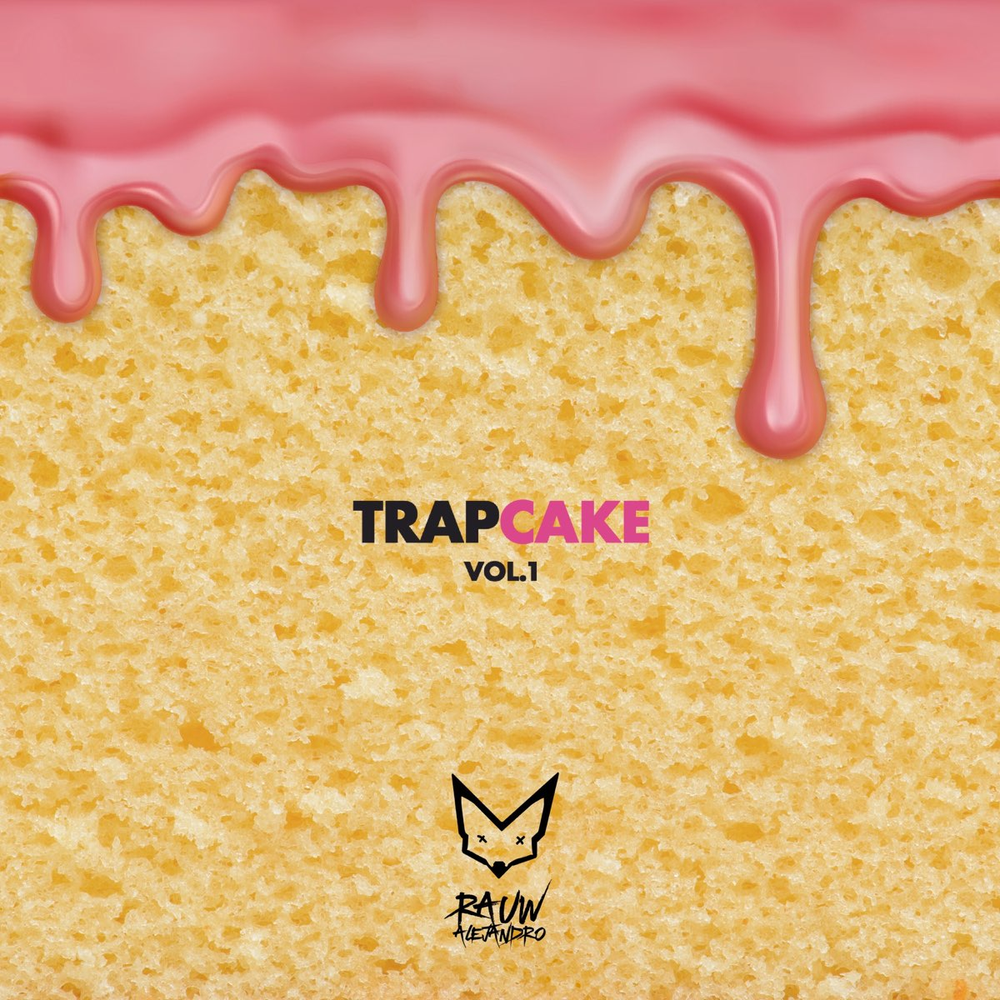
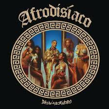
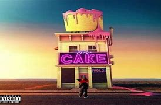
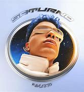
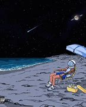

Raúl Alejandro Ocasio Ruiz (San Juan, Puerto Rico; 10 de enero de 1993), conocido artísticamente como Rauw Alejandro, es un cantante, compositor, productor musical y bailarín puertorriqueño. Pertenece a la «nueva generación» de músicos urbanos puertorriqueños.
Su padre, el guitarrista Raúl Ocasio, y su madre, la corista María Ruiz, le presentaron algunas de sus influencias musicales como los estadounidenses Elvis Presley, Michael Jackson y Chris Brown.Durante muchos años, él y su padre vivieron en los Estados Unidos, principalmente en Miami y la ciudad de Nueva York, donde se inspiró en los géneros R&B y dance hall. Cuando era niño, compitió en los concursos de talentos de la escuela porque le apasionaba bailar. Después de graduarse de la escuela secundaria, se matriculó en la Universidad de Puerto Rico. Desde los seis años hasta los veinte, también jugó al fútbol, pero luego lo dejó porque «no podía desempeñarse como esperaba» y sufrió una lesión a los veinte años; se mudó a Orlando, Florida para intentar ser descubierto para jugar en la Premier Development League (PDL), pero finalmente no tuvo éxito. Después de dejar el fútbol, quedó sumido en una ligera depresión, por lo que para mejorar su estado de ánimo decidió cambiarse a actor, una carrera en la cual duró sólo dos meses, y como ya no quiso actuar inició una carrera musical y comenzó a publicar canciones a través de SoundCloud en 2014.
Discografía
Comenzó su carrera en 2013 con la canción «Inevitable» y se mantuvo en los años siguientes lanzando canciones como «Eso que tienes», «Días así», «No me hagas esperar» y «I.D.G.F.» en 2015 y «Pa' serio», «Como nunca», «Mala mía», «Back To Sleep» y «Misiones» en 2016. Lanzó su primer mixtape titulado Punto De Equilibrio en 2016, el cual contó con las colaboraciones de Myke Towers, Álvaro Díaz, Joyce Santana y Rafa Pabön. Lanzó canciones en 2017 como «La oportunidad», «Las justas», «Ahora dice», «Tómalo», «Luz roja», «Ta' moja», «Estamos mal», «Se hace tarde» y «Toda» junto a Alex Rose, el cual contó con una remezcla en 2018 con Cazzu, Lenny Tavárez y Lyanno. Esta remezcla cuenta con más de 300 millones de reproducciones en Spotify y más de 1.000 millones en YouTube.
Toda Remix
En 2018, publicó su versión de la canción «Tú te imaginas» de De la Ghetto con el que ganó reconocimiento. Participó en canciones como «Pa' tu casa» y «Luz apagá», con los que logró consolidarse aún más. Sin embargo, con el lanzamiento de los sencillos «Que le dé» en colaboración con Nicky Jam, El sencillo «Fantasías» con Farruko, «El efecto» junto a Chencho Corleone de Plan B, además de su remezcla que contó con Bryant Myers, Dalex, Kevvo y Lyanno, lo lanzaron al reconocimiento en todo el continente a fines del año 2019.
En 2019, lanzó su primer EP titulado Trap Cake, el cual contó con participaciones de artistas como Cazzu, De la Ghetto, Jon Z, Darell, Lary Over, entre otros.

Afrodisíaco es el álbum debut del cantante Rauw Alejandro, publicado el 13 de noviembre de 2020 bajo los sellos discográficos Duars Entertainment y Sony Music Latin. Cuenta con las colaboraciones de Anuel AA, J Balvin, Zion & Lennox, Sech, Wisin & Yandel, Arcángel, Randy, Trippie Redd, entre otros.
Según el cantante, el álbum se destaca como “muy completo y versátil. Mi música es un placer para tus oídos. Hay mucho reguetón, pero me he podido encontrar musicalmente como artista”.

Vice Versa es el segundo álbum de estudio del cantante puertorriqueño Rauw Alejandro. Fue publicado el 25 de junio de 2021 a través del sello discográfico Sony Music Latin y Duars Entertaiment.
Tras la publicación de su álbum de estudio debut Afrodisíaco (2020), el cantante publicó su segundo proyecto que recibió el nombre de Vice Versa, un término en latín usado en varios idiomas para referirse a cuando una situación se da recíprocamente. El disco cuenta con la colaboración de cantantes como Chencho Corleone, Tainy, Mr. Naisgai, Anitta, Lyanno y Calleb Callaway.Del proyecto se generaron siete sencillos a fin de promocionar el disco, de los cuales destacan «2/Catorce», «Cúrame», «Todo de ti» y «Desesperados», todos estos recibiendo un gran éxito en las listas por el mundo alcanzando posiciones notables. En España, los dos últimos consiguieron el puesto número uno de la lista Top 100 Canciones de Promusicae, reflejando el éxito que estos recibieron. Mientras que «Cúrame» consiguió llegar al top 3 de dicha lista.
Trap Cake, Vol. 2 es el segundo EP del cantante puertorriqueño Rauw Alejandro. Fue lanzado el 25 de febrero de 2022 a través de Sony Music Latin y Duars Entertainment, como continuación de su EP debut lanzado en 2019, Trap Cake, Vol.2. Cuenta con apariciones especiales de Shenseea, Future, Rvssian, Ty Dolla Sign y Ankhal.
El primer sencillo del EP fue «Caprichoso» lanzado dos semanas antes de que se lanzará el EP, el 7 de febrero de 2022. El segundo sencillo «Gracias por nada» fue lanzado el 24 de febrero de 2022, justo un día antes de que se lanzará el EP. «Wuepa» junto a Ankhal, se lanzó como tercer sencillo del EP junto con un videoclip el 29 de marzo de 2022. El cuarto y último sencillo del EP «Museo» se lanzó junto a un video musical el 11 de abril de 2022.

Saturno es el tercer álbum de estudio del cantante puertorriqueño Rauw Alejandro. Fue lanzado el 11 de noviembre de 2022 a través de Sony Music Latin y Duars Entertainment. El álbum cuenta con colaboraciones de Baby Rasta, DJ Playero, Chris Palace, Arcángel, Súbelo NEO, Lyanno y Brray.
Tras lanzar su anterior álbum de estudio «Vice Versa» y su EP «Trap Cake, Vol. 2» Alejandro comenzó a preparar su tercer álbum de estudio. En agosto de 2022 reveló en un video en sus redes sociales su tercer álbum de estudio y el título que lleva por nombre "Saturno". En octubre de 2022 finalmente reveló la fecha de lanzamiento de "Saturno" y programado su lanzamiento para el 11 de noviembre de 2022. El álbum fue lanzado el 11 de noviembre de 2022 a través de las discográficas Sony Music Latin y Duars Entertainment.
El primer sencillo del álbum fue «Lokera», una colaboración con Lyanno y Brray lanzado el 25 de julio de 2022.3 El segundo sencillo fue «Punto 40» con Baby Rasta, lanzado el 22 de septiembre de 2022.4 Tras el éxito de «Punto 40», Alejandro lanzó «Dime quién????» el 28 de octubre de 2022.5 El 10 de noviembre de 2022 lanzó el video de «Lejos del Cielo».6 El séptimo sencillo del álbum, «Panties y brasieres», una colaboración con el reguetonero puertorriqueño Daddy Yankee, fue lanzado el 26 de enero de 2023.78 El octavo y último sencillo del álbum «Que rico chingamos» fue lanzado el 2 de marzo de 2023.

Playa Saturno es el cuarto álbum de estudio del cantante puertorriqueño Rauw Alejandro, que da continuidad a su anterior tercer álbum de estudio Saturno (2022). Se lanzó el 7 de julio de 2023 a través de Sony Music Latin y Duars Entertainment.
Tras el lanzamiento de su disco Saturno a finales de 2022 y el EP RR con Rosalía a principios de 2023, Alejandro había anunciado y confirmado que su próximo disco saldría a mediados de 2023, seguramente en verano. El 4 de julio de 2023 anunció la fecha de lanzamiento del álbum, programada para el 7 de julio y también reveló la portada.567 En la publicación también dijo que disfrutaramos de este álbum por un buen tiempo porque se iba a ir a descansar y que más adelante lanzará otro álbum, pero no muy pronto. Alejandro dijo que en este álbum se encuentra 95% de perreo y 5% de otra cosa. Unas horas antes de que se estrenará el álbum, el cantante reveló la lista de canciones del álbum. Finalmente, el álbum fue lanzado en la madrugada del 7 de julio.
El primer sencillo del álbum es «Baby, Hello» una colaboración con el productor argentino Bizarrap, lanzado el 23 de junio de 2023. El segundo sencillo es «Si te pegas» una canción con el cantante español Miguel Bosé, lanzado como sencillo, horas después de lanzarse el álbum, el 7 de julio de 2023.
Webs de interes
Filmografía
La Reina del Flow(2019)
Sky Rojo (2023)
La firma (2023)
Giras musicales
Fantasías Tour (2020)
Alejandro World Tour (2021)
Viceversa (2022)
Saturno World Tour (2023)